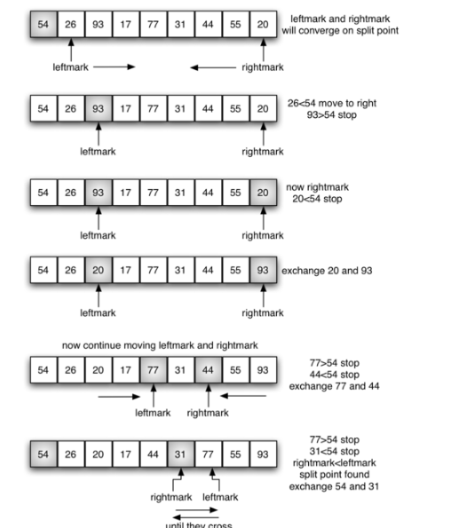

快速排序
通过一趟排序将要排序的数据分割成独立的两部分，其中一部分的所有数据都比另外一部分的所有数据都要小，然后再按此方法对这两部分数据分别进行快速排序，整个排序过程可以递归进行，以此达到整个数据变成有序序列。
快速排序的分析


def quickSort(alist,first,last):
if first<last:
splitpoint = findpos(alist,first,last)
quickSort(alist,first,splitpoint-1)
quickSort(alist,splitpoint+1,last)
def findpos(lists, low, high):
key = lists[low]
while low < high:
while low < high and lists[high] >= key:
high -= 1
lists[low] = lists[high]
while low < high and lists[low] <= key:
low += 1
lists[high] = lists[low]
lists[low] = key
return low
alist = [54,26,93,17,77,31,44,55,20]
quickSort(alist,0,8)
print(alist)
快速排序演示